6.2 Lua语言
Lua[1] 是一个高效的轻量级脚本语言。Lua 在葡萄牙语中是“月亮”的意思，它的徽标形似卫星（见图6-1），寓意着Lua是一个“卫星语言”，能够方便地嵌入到其他语言中使用。
图6-1 Lua的徽标
为什么要在其他语言中嵌入Lua脚本呢？举一个例子，假设你要开发一个运行在iPhone上的电子宠物游戏，你可能希望设定玩家每次给宠物喂食，宠物的饥饿值就会减 N 点。如果 N 是一个定值，那么就可以将N硬编码到代码中。一切都很好，直到某天你发现有大量的玩家抱怨说自己的宠物简直太能吃了，每天需要喂几十次才能喂饱。这时你不得不发布一个新版本来提高N的值，并让玩家到App Store中升级整个游戏（这期间还有漫长的应用审核过程）。不过这次你有经验了：你将N的值存到了网上，每次游戏启动后都联网查询最新的N值。这样如果下次发现N不合适，只需要在网上修改一次，所有的玩家就能自动更新了。又平安无事地过了几天，你却发现即使可以随时调整N的值，但还是无法让玩家满意，诸如“为什么我的宠物一分钟内可以吃完一周的饭量？”这样的抱怨越来越多。你知道这次必须修改代码来限制短时间内不能连续喂食多次了，同样你又要经历从发布到审核的等待，而所有的玩家又得到 App Store 中为了这一段代码重新更新整个游戏。好在你终于意识到应该使用一个更好的方法——嵌入Lua脚本来实现这一更改了。现在你将喂食的逻辑写在Lua脚本中，例如：
function feed(timeSinceLastFeed)
local hungerValue = 0
if timeSinceLastFeed > 3600
hungerValue = ((timeSinceLastFeed - 3600) / timeSinceLastFeed) * 200
return hungerValue
end
然后在你的程序中嵌入一个Lua解释器，每次需要喂食时就通过解释器调用这个Lua脚本，并将上次喂食距现在的时间传给feed函数，feed函数根据这个时间计算此次喂食需要减少的饥饿值：时间越短减少的饥饿值就越少。下次需要调整这个算法时只要从网上更新这个脚本就可以了，连游戏都不用重启。另外你还可以把宠物的状态如心情之类的传入这个函数，即使现在用不到，以后说不定也会用到。总之越多的逻辑放在脚本上，你的程序升级或扩展就越容易。
实际上很多iOS游戏中都使用了Lua语言，例如2011年很火的游戏《愤怒的小鸟》就是使用Lua语言实现的关卡，而就在那一年Lua在TIOBE世界编程语言排行榜上进入了前10名。另外风靡全球的网络游戏《魔兽世界》的插件也是使用Lua语言开发的。
其实 Redis 和电子宠物游戏遇到的问题有点相似，很多人都希望在 Redis 中加入各种各样的命令，这些命令中有的确实很实用，但却可以使用多个 Redis 已有的命令实现。在Redis中包含所有开发者需要的命令显然是不可能的，所以Redis在2.6版中提供了Lua脚本功能来让开发者自己扩展Redis。
Redis使用Lua 5.1 版本，所以本书介绍的Lua 语法基于此版本。本节不会完整地介绍Lua语言中的所有要素，而是只着重介绍编写Redis脚本会用到的部分，对Lua语言感兴趣的读者推荐阅读Lua 作者Roberto Ierusalimschy[2] 写的Programming in Lua 这本书。
1．数据类型
Lua 是一个动态类型语言，一个变量可以存储任何类型的值。编写 Redis 脚本时会用到的类型如表6-1所示。
表6-1 Lua常用数据类型
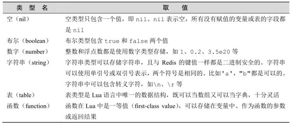
2．变量
Lua 的变量分为全局变量和局部变量。全局变量无需声明就可以直接使用，默认值是nil。如：
a = 1 --为全局变量a赋值
print(b) --无需声明即可使用，默认值是nil
a = nil --删除全局变量a的方法是将其赋值为nil。全局变量没有声明和未声明之分，只有非nil和nil的区别
在 Redis 脚本中不能使用全局变量，只允许使用局部变量以防止脚本之间相互影响。声明局部变量的方法为local变量名，就像这样：
local c --声明一个局部变量c，默认值是nil
local d = 1 --声明一个局部变量d并赋值为1
local e, f --可以同时声明多个局部变量
同样声明一个存储函数的局部变量的方法为：
local say_hi = function ()
print 'hi'
end
变量名必须是非数字开头，只能包含字母、数字和下划线，区分大小写。变量名不能与Lua的保留关键字相同，保留关键字如下：
and break do else elseif
end false for function if
in local nil not or
repeat return then true until while
局部变量的作用域为从声明开始到所在层的语句块末尾，比如：
local x = 10
if true then
local x = x + 1
print(x)
do
local x = x + 1
print(x)
end
print(x)
end
print(x)
打印结果为：
11
12
11
10
3．注释
Lua的注释有单行和多行两种。
单行注释以--开始，到行尾结束，在上面的代码已经使用过了，一般习惯在--后面跟上一个空格。
多行注释以--[[开始，到]]结束，如：
--[[
这是一个多行注释
]]
4．赋值
Lua支持多重赋值，比如：
local a, b = 1, 2 -- a的值是1，b的值是2
local c, d = 1, 2, 3 -- c的值是1，d的值是2，3被舍弃了
local e, f = 1 -- e的值是1，f的值是nil
在执行多重赋值时，Lua会先计算所有表达式的值，比如
local a = {1, 2, 3}
local i = 1
i, a[i] = i + 1, 5
Lua计算所有表达式的值后，上面最后一个赋<语句变为 i, a[1] = 2, 5，所以赋值后 i的值为 2，a则为{5, 2, 3}[3] 。
Lua中函数也可以返回多个值，后面会讲到。
5．操作符
Lua有以下5类操作符。
（1）数学操作符。数学操作符包括常见的+、-、*、/、%（取模）、-（一元操作符，取负）和幂运算符号^。
数学操作符的操作数如果是字符串会自动转换成数字，比如：
print('1' + 1) -- 2
print('10' * 2) -- 20
（2）比较操作符。Lua的比较操作符如表6-2所示。
表6-2 Lua的比较操作符
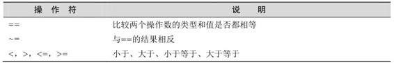
比较操作符的结果一定是布尔类型。比较操作符不同于数学操作符，不会对两边的操作数进行自动类型转换，也就是说：
print(1 == '1') -- false,二者类型不同，不会进行自动类型转换
print({'a'} == {'a'}) -- false,对于表类型值比较的是二者的引用
如果需要比较字符串和数字，可以手动进行类型转换。比如下面两个结果都是true：
print(1 == tonumber('1'))
print('1' == tostring(1))
其中tonumber函数还可以进行进制转换，比如：
print(tonumber('F', 16)) --将字符串'F'从 16 进制转成 10 进制结果是 15
（3）逻辑操作符。Lua的逻辑操作符如表6-3所示。
表6-3 Lua的逻辑操作符
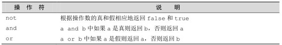
只要操作数不是nil或false，逻辑操作符就认为操作数是真，否则是假。特别需要注意的是即使是0或空字符串也被当作真（Ruby开发者肯定会比较适应这一点）。下面是几个逻辑操作符的例子：
print(1 and 5) -- 5
print(1 or 5) -- 1
print(not 0) -- false
print('' or 1) -- ''
Lua 的逻辑操作符支持短路，也就是说对于 false and foo()，Lua 不会调用 foo函数，因为第一个操作数已经决定了无论foo函数返回的结果是什么，该表达式的值都是false。or操作符与之类似。
（4）连接操作符。连接操作符只有一个：..，用来连接两个字符串，比如：
print('hello' .. ' ' .. 'world!') -- 'hello world!'
连接操作符会自动把数字类型的值转换成字符串类型：
print('The price is ' .. 25) -- 'The price is 25'
（5）取长度操作符。取长度操作符是Lua 5.1 中新增加的操作符，同样只有一个，即#，用来获取字符串或表的长度：
print(#'hello') -- 5
各个运算符的优先级顺序如表6-4所示。
表6-4 运算符的优先级（优先级依次降低）
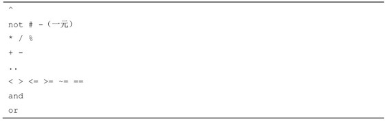
6．if语句
Lua的if语句格式如下：
if 条件表达式 then
语句块
elseif 条件表达式 then
语句块
else
语句块
end
注意 前面提到过在Lua中只有 nil和 false才是假，其余值，包括空字符串和 0，都被认为是真值。这是一个容易出问题的地方，比如 Redis 的 EXISTS 命令返回值 1和 0 分别表示存在或不存在，但下面的代码无论 EXISTS 命令的结果是 1 还是 0， exists 变量的值都是 true：
if redis.call('exists', 'key') then
exists = true
else
exists = false
end
所以需要将 redis.call('exists', 'key')改写成 redis.call('exists', 'key') == 1 才正确。
Lua与JavaScript一样每个语句都可以;结尾，但一般来说编写Lua时都会省略;（Lua的作者也是这样做的）。Lua也并不强制要求缩进，所有语句也可以写在一行中，比如：
a = 1
b = 2
if a then
b = 3
else
b = 4
end
可以写成
a = 1 b = 2 if a then b = 3 else b = 4 end
甚至如下代码也是正确的：
a =
1 b = 2 if a
then b = 3 else b
= 4 end
但为了增强可读性，在编写的时候一定要注意缩进。
7．循环语句
Lua支持 while, repeat和 for循环语句。
while语句的形式为：
while 条件表达式 do
语句块
end
repeat语句的形式为：
repeat
语句块
until 条件表达式
for语句有两种形式，一种是数字形式：
for 变量=初值, 终值, 步长 do
语句块
end
其中步长可以省略，默认步长为1。比如使用for循环计算1～100的和：
local sum = 0
for i = 1, 100 do
sum = sum + i
end
提示 for语句中的循环变量（即本例中的 i）是局部变量，作用域为 for循环体内。虽然没有使用local声明，但它不是全局变量。
for语句的通用形式为：
for 变量 1, 变量 2, ..., 变量 N in 迭代器 do
语句块
end
在编写Redis脚本时我们常用通用形式的for语句遍历表的值，下面还会再介绍。
8．表类型
表是Lua中唯一的数据结构，可以理解为关联数组，任何类型的值（除了空类型）都可以作为表的索引。
表的定义方式为：
a = {} --将变量a赋值为一个空表
a['field'] = 'value' --将field字段赋值value
print(a.field) --打印内容为'value'，a.field是a['field']的语法糖。
people = { --也可以这样定义
name = 'Bob',
age = 29
}
print(people.name) --打印的内容为'Bob'
当索引为整数的时候表和传统的数组一样，例如：
a = {}
a[1] = 'Bob'
a[2] = 'Jeff'
可以写成下面这样：
a = {'Bob', 'Jeff'}
print(a[1]) --打印的内容为'Bob'
注意 Lua约定数组[4] 的索引是从1 开始的，而不是0。
可以使用通用形式的for语句遍历数组，例如：
for index, value in ipairs(a) do
print(index) -- index迭代数组a的索引
-- value迭代数组a的值print(value)
end
打印的结果是：
1
Bob
2
Jeff
ipairs是Lua内置的函数，实现类似迭代器的功能。当然还可以使用数字形式的for语句遍历数组，例如：
for i = 1, #a do
print(i)
print(a[i])
end
输出的结果和上例相同。#a的作用是获取表a的长度。
Lua还提供了一个迭代器pairs，用来遍历非数组的表值，例如：
people = {
name = 'Bob',
age = 29
}
for index, value in pairs(people) do
print(index)
print(value)
end
打印结果为：
name
Bob
age
29
pairs与ipairs的区别在于前者会遍历所有值不为nil的索引，而后者只会从索引1开始递增遍历到最后一个值不为nil的整数索引。
9．函数
函数的定义为：
function (参数列表)
函数体
end
可以将其赋值给一个局部变量，比如：
local square = function (num)
return num * num
end
如果没有参数，括号也不能省略。Lua还提供了一个语法糖来简化函数的定义，比如：
local function square (num)
return num * num
end
这段代码会被转换为：
local square
square = function (num)
return num * num
end
因为在赋值前声明了局部变量square，所以可以在函数内部引用自身（实现递归）。
如果实参的个数小于形参的个数，则没有匹配到的形参的值为 nil。相对应的，如果实参的个数大于形参的个数，则多出的实参会被忽略。如果希望捕获多出的实参（即实现可变参数个数），可以让最后一个形参为...。比如，希望传入若干个参数计算这些数的平方：
local function square (...)
local argv = {...}
for i = 1, #argv do
argv[i] = argv[i] * argv[i]
end
return unpack(argv)
end
a, b, c = square(1, 2, 3)
print(a)
print(b)
print(c)
输出结果为：
1
4
9
在第二个square函数中，我们首先将...转换为表argv，然后对表的每个元素计算其平方值。unpack 函数用来返回表中的元素，在上例中 argv 表中有 3 个元素，所以return unpack(argv)相当于 return argv[1], argv[2], argv[3]。
在Lua中return和break（用于跳出循环）语句必须是语句块中的最后一条语句，简单地说在这两条语句后面只能是end，else或until三者之一。如果希望在语句块的中间使用这两条语句的话可以人为地使用do和end将其包围。
Lua 的标准库中提供了很多实用的函数，比如前面介绍的迭代器 ipairs 和pairs，类型转换函数 tonumber和 tostring，还有 unpack函数都属于标准库中的“Base”库。
Redis支持大部分Lua标准库，如表6-5所示。
表6-5 Redis支持的Lua标准库
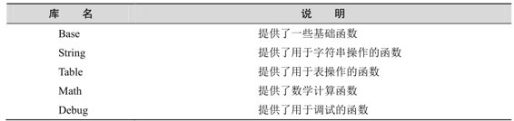
下面会简单介绍几个常用的标准库函数，要了解全部函数请查看Lua手册[5] 。
1．String库
String 库的函数可以通过字符串类型的变量以面向对象的形式访问，如 string.len (string_var)可以写成string_var:len()。
（1）获取字符串长度。
string.len(string)
string.len()的作用和操作符#类似，例如：
> 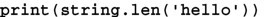
5
> 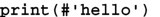
5
（2）转换大小写。
string.lower(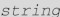)
string.upper()
例如：
> 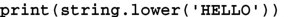
hello
> 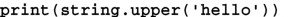
HELLO
（3）获取子字符串。
string.sub(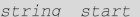[,string.sub()可以获取一个字符串从索引开始到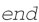结束的子字符串，索引从1开始。索引可以是负数，−1代表最后一个元素。end参数如果省略则默认是−1（即截取到字符串末尾）。
例如：
> 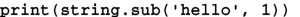
hello
> 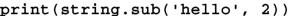
ello
> 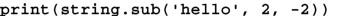
ell
> 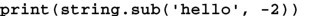
lo
2．Table库
Table库中的大部分函数都需要表的形式是数组形式。
（1）将数组转换为字符串。
table.concat(
table.concat()与JavaScript中的join()类似，可以将一个数组转换成字符串，中间以参数指定的字符串分割，默认为空。i和j用来限制要转换的表元素的索引范围，默认分别是1和表的长度，不支持负索引。例如：
> 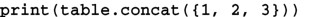
123
> 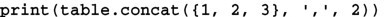
2,3
> 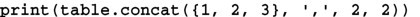
2
（2）向数组中插入元素。
table.insert(
向指定索引位置插入元素value，并将后面的元素顺序后移。默认的值是数组长度加1，即在数组尾部插入。如：
> 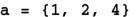
> 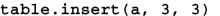
> 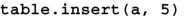
> 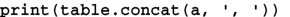
1, 2, 3, 4, 5
（3）从数组中弹出一个元素。
table.remove(
从指定的索引删除一个元素，并将后面的元素前移，返回删除的元素值。默认的值是数组的长度，即从数组尾部弹出一个元素。如：
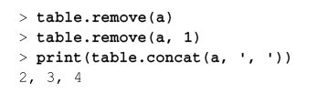
3．Math库
Math库提供了常用的数学运算函数，如果参数是字符串会自动尝试转换成数字。具体的函数列表见表6-6。
表6-6 Math库的常用函数
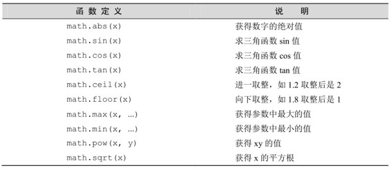
除此之外，Math库还提供了随机数函数：
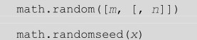
math.random()函数用来生成一个随机数，根据参数不同其返回值范围也不同：
没有提供参数：返回范围在[0, 1)的实数；
只提供了m参数：返回范围在[1,m]的整数；
同时提供了m和n参数：返回范围在[m,n]的整数。
math.random函数生成的随机数是依据种子（seed）计算得来的伪随机数，意味着使用同一种子生成的随机数序列是相同的。可以使用math.randomseed()函数设置种子的值，例如：
> 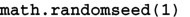
>
1
>
14
>
76
>
> 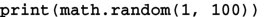
1
>
14
>
76
除了标准库以外，Redis还通过cjson库[6] 和cmsgpack库[7] 提供了对JSON和MessagePack的支持。Redis自动加载了这两个库，在脚本中可以分别通过cjson和cmsgpack两个全局变量来访问对应的库。两者的用法如下：
local people = {
name = 'Bob',
age = 29
}
--使用 cjson 序列化成字符串：
local json_people_str = cjson.encode(people)
--使用 cmsgpack 序列化成字符串：
local msgpack_people_str = cmsgpack.pack(people)
--使用 cjson 将序列化后的字符串还原成表：
local json_people_obj = cjson.decode(people)
print(json_people_obj.name)
--使用 cmsgpack 将序列化后的字符串还原成表：
local msgpack_people_obj = cmsgpack.unpack(people)
print(msgpack_people_obj.name)